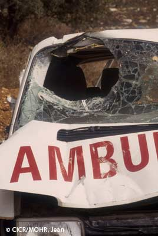

Les opérations spécifiquement interdites

De nombreuses méthodes de guerre sont spécifiquement interdites par le droit international humanitaire :
- interdiction d’attaquer les établissements et unités sanitaires sauf si ces derniers sont utilisés pour commettre des actes nuisibles à l’ennemi. Le signe visible de cette protection est l’emblème de la croix rouge, du croissant rouge ou du cristal rouge qui pourra être apposé sur les unités sanitaires.
- interdiction d’attaquer les organismes de protection civile sauf quand ces derniers commettent des actes nuisibles à l’ennemi. Afin de permettre l’identification de ces organismes, le personnel, les bâtiments et le matériel doivent être identifiés à l’aide du signe distinctif suivant :
- interdiction d’attaquer des biens culturels et des lieux de culte. L’ensemble des biens culturels et lieux de cultes sont protégés en tant que biens civils mais ceux qui constituent le patrimoine culturel ou spirituel des peuples bénéficient d’une protection supplémentaire à condition, toujours, que ces derniers ne soient pas transformés en objectifs militaires. Afin de permettre l’identification de ces biens, ils peuvent être munis du signe distinctif suivant :
- interdiction d’attaquer les installations contenant des forces dangereuses à savoir les barrages, les centrales nucléaires et les digues. S’ils sont utilisés de manière militaire, ils pourront être l’objet d’attaques uniquement s’ils sont utilisés par l’adversaire en appui régulier, important et direct de son effort militaire. Afin de permettre l’identification des installations dangereuses, le signe distinctif suivant peut être utilisé :
- interdiction d’attaquer l’environnement. Il s’agit notamment des actes délibérés visant à provoquer des tremblements de terre ou des raz-de-marée, à bouleverser l’équilibre écologique d’une région…
- interdiction de la perfidie, c’est à dire l’ensemble des actes faisant appel, avec l’intention de tromper la bonne foi de l’adversaire (ex : feindre une incapacité due à des blessures pour combattre plus facilement par la suite). Il ne faut pas confondre la perfidie avec la ruse de guerre qui, elle, est autorisée par le DIH (ex : opérations simulées, camouflages).
- interdiction du refus de quartier : il est interdit de conduire des attaques en décidant qu’il n’y aura pas de survivants à l’issue des combats.
- interdiction d’attaquer un ennemi hors de combat à savoir les soldats qui se rendent, les naufragés, les blessés et les malades
- interdiction des prises d’otage.
- interdiction des actes de terreur : les actes ou menaces de violence dont le but principal est de répandre la terreur parmi la population civile sont interdits.
- interdiction de certaines mesures de représailles contre l’ensemble des biens et des personnes protégées par le DIH (civils, prisonniers de guerre, biens culturels, environnement,…).
- interdiction de la famine et interdiction d’attaquer des biens indispensables à la survie de la population
- interdiction de procéder à des déportations et à des transferts forcés.
- interdiction d’attaquer certaines zones spécifiques à savoir les zones sanitaires et de sécurité, les zones neutralisées, les zones démilitarisées et les localités non défendues.
| Sources |
Etablissements et unités sanitaires :
- Deuxième Protocole additionnel aux Conventions de Genève, 1977 : articles 11 et 12
- Droit international coutumier : règles 28 et 29
Organismes de protection civile :
- Droit international coutumier : règles 31 et 32
Biens culturels et lieux de culte :
- Deuxième Protocole additionnel aux Conventions de Genève, 1977 : article 16
- Convention de La Haye pour la protection des biens culturels, 1954
- Droit international coutumier : règle 38
Installations contenant des forces dangeureuses :
- Deuxième Protocole additionnel aux Conventions de Genève, 1977 : Article 15
- Droit international coutumier : règle 42
Perfidie :
- Droit international coutumier : règle 65
Environnement :
- Convention sur l’interdiction d’utiliser des techniques de modification de l’environnement à des fins militaires ou toutes autres fins hostiles, 1977
- Droit international humanitaire : règle 43
Actes de terreur :
- Deuxième Protocole additionnel aux Conventions de Genève, 1977 : article 13
- Droit international coutumier : règle 2
Représailles :
- Droit international coutumier : règle 148
Refus de quartier :
- Deuxième Protocole additionnel aux Conventions de Genève, 1977 : article 4
- Droit international coutumier : règle 46
Attaques d’ennemis hors de combat :
- Droit international coutumier : règle 47
Prises d’otage :
- Deuxième Protocole additionnel aux Conventions de Genève, 1977 : article 4
- Droit international coutumier : règle 96
Famine et biens indispensables à la survie de la population :
- Droit international coutumier : règles 53 et 54
Déportations et transferts forcés :
- Droit international humanitaire : règle 129
Attaques de certaines zones :
- Droit international coutumier : règles 35 à 37